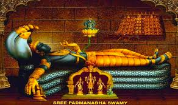
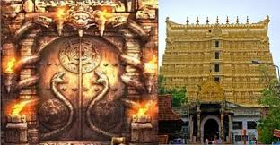
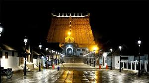

Tiruvananthapuram
- This is the town in kerala
- This is an captal of kerala state
- The temple is lord of padmanaba swami
- When the temple is under control central government
- The More security and high security of temple
- Under control all central government security ARMY and CRPFs
- The temple is very powerful temple
- The darshan of lord is timeings are follow
- 4am to 5am || 7am to 8am || 10am to 11am || 1pm to 2pm || 4pm to 5pm || 7pm to 8pm
- The above timeings are to follow the temple after 8pm to close the temple
- And you can only 1hr to stay the temple and next 1hr to all the check the temple of CRPF persons
- The mobiles are not allowed if you have mobile free mobile counters are avalible near temple
If you went temple to were the cultural dresses
- Gents are pancha without shirt and ladies are sarees
- The history of temple is 7rooms in temple
- The temple is 6rooms are opened on temple
- The opened rooms is to see a more gold and more money
- And more old vigrahams sencharies of vigrahams
- This temple is starting to control Rajula family
- After we control is handover the central government
- The 7th room is not open because it's nagabandan
- So the very high gold and costly temple of in india
- Total the temple property is lakhs of crows
- Because thet temple is very high security



